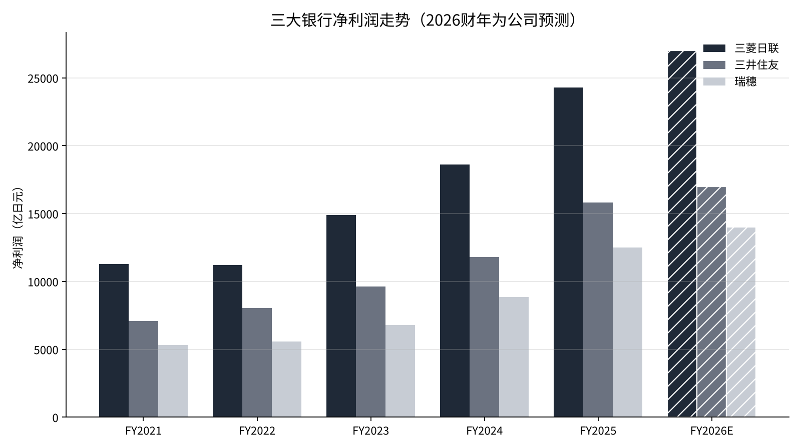
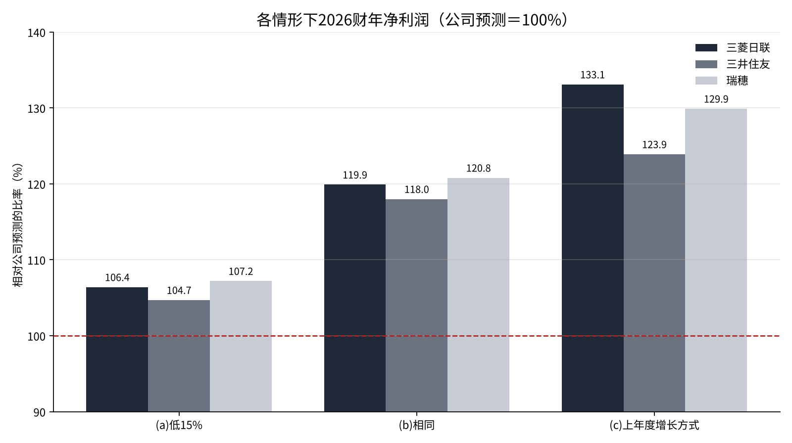

日本三大银行的全年净利润预测，在11月13日的中期业绩中能确定到什么程度
三菱日联金融集团、三井住友金融集团和瑞穗金融集团将于11月13日公布2026财年的中期业绩[4]。三家银行4至6月的净利润合计为1.7336万亿日元（约110亿美元），比上年同期增长40%以上[2][3]。
另一方面，在11月6日日经平均指数暴跌之后，据报道市场对日本央行12月加息的预期已降至50%出头[10]。东京证券交易所的银行业指数仅上周就下跌了7.02%[11]。
本文的问题是：从过去业绩的推进方式来看，三家银行提出的2026财年净利润预测有多大可能达成？在中期业绩中确认什么，才能让答案确定下来？
- 三家银行2026财年的净利润预测（三菱日联2.7万亿日元、三井住友1.7万亿日元、瑞穗1.4万亿日元）相对2025财年实绩只增长7%至12%，4至6月的进度率为29.5%至30.2%。
- 即使7至9月以后每个季度比4至6月少两成左右，也能达到预测；在最弱的情形下，三家银行也比预测高出5%至7%。
- 中期业绩应确认三点：进度率是否超过50%，资金利润是否保持在4至6月的水平，信用相关费用是否突然增加。

问题与背景
三家银行的净利润在这五年里大幅增长。从2021财年（截至2022年3月）到2025财年（截至2026年3月），三菱日联从约1.13万亿日元增至2.4272万亿日元，三井住友从约7066亿日元增至1.583万亿日元，瑞穗从约5305亿日元增至1.2486万亿日元[5][6][7]。按四年的年率计算，每家银行的增速都在21%至24%。
增长的核心是资金利润。资金利润是指从贷款和有价证券收取的利息，减去为存款等支付的利息后的金额。日本央行于2024年3月结束负利率，此后通过加息，在2026年9月把政策利率提高到约1.25%[4]。
本文使用的另一个概念是进度率。进度率是指截至某一时点的净利润，达到该财年预测（公司设定的目标）的百分之多少。中期业绩就是在年度过半时显示这一比率的场合。
2026财年的预测为：三菱日联2.7万亿日元，三井住友1.7万亿日元，瑞穗1.4万亿日元[3]。瑞穗在4至6月业绩公布时，把预测从1.3万亿日元上调[3]。
数据与方法
本文使用各公司业绩简报和说明材料中的净利润（归属于母公司股东的净利润）[1][5][6][7]。往年的数字取自汇总有价证券报告书数据的EDINET统计[7]。贷款利率使用日本央行的贷款约定平均利率[8]。
方法分为三步。第一，考察2025财年业绩的推进方式。把4至6月、中期和全年的净利润并列，看实际结果比年初预测高出多少。
第二，把2026财年4至6月的净利润套用2025财年的推进方式。2025财年4至6月的净利润，由2026财年的数字和同比增长率倒推得出：三菱日联约5462亿日元，三井住友约3769亿日元，瑞穗约2905亿日元。
第三，对7至9月以后的盈利方式设定三种情形，测算2026财年的全年净利润。银行的季度利润有季节性。在财年最后的1至3月，费用和准备金往往集中计提，利润增长常常放缓。情形(a)把后半年的季度设得较低，以此检验这一点。同时倒推出：要恰好达到预测，7至9月以后的每个季度需要达到4至6月的百分之多少。

结果
首先是2025财年的推进情况。三家银行最终都大幅超过了年初的预测。
| 银行 | 年初预测 | 中期净利润 | 中期进度率 | 全年实绩 | 对年初预测 |
|---|---|---|---|---|---|
| 三菱日联 | 2万亿日元 | 1.2929万亿日元 | 64.6% | 2.4272万亿日元 | 121.4% |
| 三井住友 | 1.3万亿日元 | 9335亿日元 | 71.8% | 1.583万亿日元 | 121.8% |
| 瑞穗 | 1.02万亿日元 | 6899亿日元 | 67.6% | 1.2486万亿日元 | 122.4% |
在中期业绩时，三菱日联把预测上调至2.1万亿日元，三井住友上调至1.5万亿日元，瑞穗上调至1.13万亿日元[5][6][9]。即便如此，三家银行最终都超过了上调后的数字。中期进度率达到65%至72%的那一年，全年业绩比年初预测高出两成以上。

接着看2026财年4至6月的进度率。三菱日联为8094亿日元，占预测的30.0%；三井住友为5013亿日元，占29.5%；瑞穗为4229亿日元，占30.2%[2][3]。简单乘以四，三家银行都会比预测高出近两成。三家合计，4至6月的1.7336万亿日元相当于预测合计5.8万亿日元的29.9%。与2025财年三家实绩合计5.2588万亿日元相比，预测合计只多出10.3%。
我也倒推了恰好达到预测的条件。即使7至9月以后的三个季度分别降到4至6月的77.9%（三菱日联）、79.7%（三井住友）和77.0%（瑞穗），仍能达到预测。换句话说，剩余季度的净利润即使比4至6月少两成左右，预测也能达到。
敏感性分析
对7至9月以后的盈利方式设定三种情形，测算全年净利润：(a)7至9月以后每个季度比4至6月低15%；(b)与4至6月相同；(c)按与2025财年相同的比率在后半年增长。(c)的倍数为2025财年全年净利润除以同年4至6月净利润的值（三菱日联4.44倍、三井住友4.20倍、瑞穗4.30倍）。
| 银行 | (a)低15% | (b)相同 | (c)上年度的增长方式 |
|---|---|---|---|
| 三菱日联 | 2.8734万亿日元（为预测的106.4%） | 3.2376万亿日元（119.9%） | 3.5937万亿日元（133.1%） |
| 三井住友 | 1.7796万亿日元（104.7%） | 2.0052万亿日元（118.0%） | 2.1055万亿日元（123.9%） |
| 瑞穗 | 1.5013万亿日元（107.2%） | 1.6916万亿日元（120.8%） | 1.8185万亿日元（129.9%） |
三种情形都不低于预测。即使在最弱的(a)中，三家银行也都比预测高出5%至7%。

从中期业绩的阶段看，如果保持4至6月的盈利节奏，三菱日联的中期净利润约为1.6188万亿日元，进度率为60.0%。之所以低于2025财年中期的64.6%至71.8%，是因为2026财年的预测本身就设在接近上年实绩的水平。
讨论
测算结果显示，预测还有余地。2026财年的预测相对于2025财年实绩，三菱日联只增长11.2%，三井住友7.4%，瑞穗12.1%。与四年21%至24%的年增速相比，看起来设定得较为保守。
不过，也有相反的看法。第一，4至6月的利润中可能包含出售股票的收益或一次性收益。11月股价暴跌，可能改变7至9月以后有价证券的估值和出售计划。
第二，加息的效果取决于贷款利率上升的速度。根据日本央行的统计，国内银行贷款约定平均利率中，存量贷款从2024年3月到2026年8月上升了0.72个百分点[8]。新增贷款在同一期间从0.683%升至1.782%[8]。如果12月不加息，2026财年后半年的增量就会变小。
第三是为坏账准备的费用（信用相关费用）增加。经济降温时，企业还款会出现延迟，银行会追加计提准备金。从美国关税到中东局势，海外贷款仍有难以预判的风险。
也写下数据的局限。三井住友4至6月的同比增速是报道中的约数“约增长33%”，倒推出的上年数字存在一定范围[3]。往年净利润的部分数字使用的是汇总网站的取整值[7]。检验标准很明确：11月13日的中期净利润是否超过预测的50%，以及公司是否上调预测。
对银行股东来说，分红前景也是重要的数字。2026财年的年度分红预测为：三菱日联每股96日元，三井住友在1拆2之后为90日元[4]。很多银行按净利润乘以一定比例来决定分红，如果净利润超过预测，分红或回购可能增加。反之，如果净利润低于预测，增配幅度就会变小。
结论
问题的答案是：从过去的推进方式看，2026财年的预测很可能达到。即使7至9月以后的季度比4至6月少两成左右，三家银行也都能达到预测。在中期业绩中应确认三点：中期进度率是否超过50%；7至9月的资金利润是否保持在4至6月的水平；信用相关费用是否突然增加。
我的看法
我在日本，持有四家银行的股票：三菱日联7500股、里索那13500股，三井住友信托和三井住友金融集团各26000股。日本股票占我总资产的48.14%。
即使股价下跌，分红也不会变。对这四家银行，我看的是分红和净利润两项，13日的业绩我也只打算确认这两项是否符合预测。日本央行不会降息，所以即使12月加息的预期下降，我的持有方式也不会改变。业绩公布当天，我没有买卖的计划。
来源
- 三菱日联金融集团, 《2026年3月期第2季度（中期）业绩简报》, 2025-11-14, https://www.mufg.jp/dam/ir/fs/2025/pdf/summary2509_ja.pdf
- Bloomberg, 《MUFG 4至6月净利润同比增长48%至8094亿日元》, 2026-08-03, https://www.bloomberg.com/jp/news/articles/2026-08-03/TJ6ETEKK3NY800
- ONE CAREER, 《大型银行业绩比较》, 2026, https://plus.onecareer.jp/articles/934
- media-ir, 《大型银行业绩的焦点》, 2026-11-08, https://www.media-ir.com/news/?p=187525
- 三菱日联金融集团, 《2025财年中期业绩要点》, 2025-11-14, https://www.mufg.jp/dam/ir/fs/2025/pdf/highlights2509_ja.pdf
- 三井住友金融集团, 《2025财年中期业绩说明材料》, 2025-11, https://www.smfg.co.jp/investor/financial/disclosure/fy2025_inter_pdf/fy2025_inter_02.pdf
- EDINET DB, 《瑞穗、三井住友、三菱日联业绩推移》（有价证券报告书汇总）, 2026-11-09查阅, https://edinetdb.jp/company/E03615/earnings/FY2025
- 日本银行, 《贷款约定平均利率》, 2026, https://www.boj.or.jp/statistics/dl/loan/yaku/index.htm
- 瑞穗金融集团, 《2026年3月期第2季度业绩简报》（Monex转载）, 2025-11-14, https://scouter.monex.co.jp/news/detail/8411_20251114_act_20251114_153045_4
- 日本经济新闻, 《股价暴跌令日本央行12月加息蒙上阴影，市场预期降至50%出头》, 2026-11-06, https://www.nikkei.com/article/DGXZQOFL060BJTW6A101C2000000/
- Magnikki, 《11月2日至6日一周回顾》, 2026-11-08, https://magnikki.com/market-review-2026w45/
照片：Kate Branch、Mohamed Jamil Latrach（Unsplash）。图表由YUKI CAPITAL制作
每天的数字和判断，我都记录在X上。